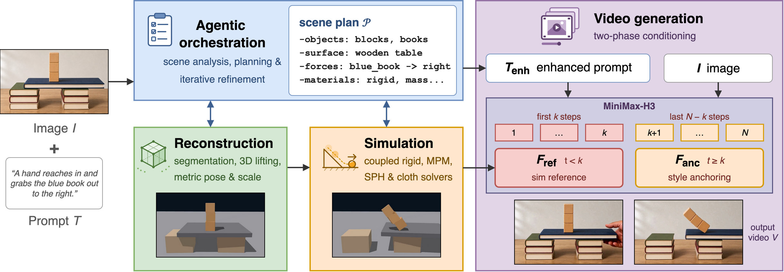
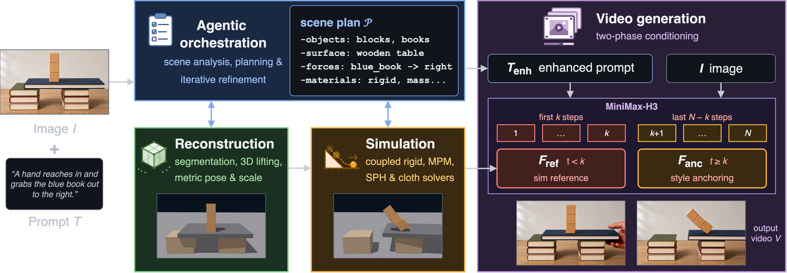

Bridging Physical Simulation and Flexible Video Generation
University of Freiburg, Germany
We present InterPlay, a training-free framework that bridges the gap between physical accuracy and generative flexibility by letting an agent balance the dynamics between a simulator and a video model. Rather than using the video model as a mere renderer, InterPlay lets it complete the dynamics: the simulator controls objects it models reliably, while the video model fills in everything else, from human motion to complex phenomena and optical effects. A vision-language model (VLM) agent connects the two: it decides which parts of the scene to simulate, supervising both the reconstruction and the scene dynamics with iterative refinements. Using our two-phase conditioning, the frozen video model is anchored to the simulated trajectories, while the rest of the scene remains free to evolve. This division of tasks extends simulation-grounded generation well beyond the simulator's scope.
Video models and simulation-grounded methods fail in complementary ways. Video models produce implausible dynamics, while simulation-grounded methods use the video model as a renderer of the full simulated scene and cannot add elements outside the simulator. InterPlay combines the physical accuracy of the simulation with the flexibility of video models.
Prompt: “A hand slides the blue middle block out sideways.”
Video models alone can generate external elements, but often miss the physical outcome of the event. Simulation-grounded baselines have to simulate the entire scene, and produce implausible motion or lose the appearance of the input image.
InterPlay handles balance, chain reactions, light, particles and wind, with no training, and from just an image and a prompt.
InterPlay needs only an image and a text prompt and produces a video for every input, which allows a direct comparison with both video generation models and simulation-grounded pipelines.
| Method | Physical ↑ | Dynamical ↑ | Average ↑ | Failure (%) ↓ |
|---|---|---|---|---|
| Video generation models | ||||
| Cosmos3-Super | 0.727 | 0.660 | 0.693 | 0.0 |
| Wan2.2-VACE | 0.675 | 0.706 | 0.690 | 5.1 |
| MiniMax-H3 | 0.686 | 0.814 | 0.750 | 2.0 |
| Simulation-grounded models | ||||
| PhysAgent | 0.504 | 0.344 | 0.424 | 35.9 |
| RealWonder | 0.762 | 0.404 | 0.583 | 5.1 |
| PhysOmni | 0.561 | 0.159 | 0.360 | 30.8 |
| VDAWorld | 0.675 | 0.344 | 0.509 | 28.2 |
| InterPlay | 0.747 | 0.875 | 0.811 | 0.0 |
Failure rate combines the Morpheus discard criteria and failed runs.
| Method | SA ↑ | PC ↑ | VQ ↑ | Avg ↑ | Failure (%) ↓ |
|---|---|---|---|---|---|
| Video generation models | |||||
| Cosmos3-Super | 2.33 | 3.60 | 3.98 | 3.30 | – |
| Wan2.2-VACE | 2.36 | 3.39 | 3.94 | 3.23 | – |
| MiniMax-H3 | 2.60 | 3.63 | 3.98 | 3.41 | – |
| Simulation-grounded models | |||||
| PhysAgent | 1.44 | 1.59 | 2.11 | 1.71 | 49.3 |
| RealWonder | 1.70 | 2.05 | 3.00 | 2.25 | 8.4 |
| PhysOmni | 1.51 | 2.09 | 2.33 | 1.98 | 19.6 |
| VDAWorld | 1.35 | 1.67 | 1.45 | 1.49 | 59.6 |
| InterPlay | 3.67 | 3.75 | 4.00 | 3.81 | 0.0 |
VLM-judge metrics on a 1–5 scale. SA: semantic adherence, PC: physical commonsense, VQ: visual quality.
Best in bold, second best underlined. Inputs beyond the image and the prompt required by RealWonder and PhysOmni are estimated with a VLM.
The VLM agent creates a scene plan and iterates over a set of reconstruction and simulation tools to generate a control video of the scene. Our two-phase conditioning then feeds the control signal to the video model but remaims flexible to generate additional elements.


A VLM agent reads the image and the prompt and writes a scene plan: which objects to simulate, including objects implied by the prompt but absent from the image, their materials, and the forces that trigger the event.
The planned objects are segmented, lifted to 3D and placed at metric scale, then rolled out in the simulator. The agent inspects the reconstruction and the simulated motion, and corrects its estimates in feedback loops.
The control video of the simulated objects conditions only the first k denoising steps of MiniMax-H3. The remaining steps pin the input frame and its style, leaving the rest of the scene free to evolve.
“A hand reaches in and grabs the blue book out to the right.”
A benchmark of 55 image and prompt pairs in which a physical event involves elements that are impossible or costly to simulate. The prompt describes only how the event is triggered, so the outcome must be predicted. Click an image to see its prompts.
@article{begiristain2026interplay,
title = {InterPlay: Bridging Physical Simulation and Flexible Video Generation},
author = {Begiristain, Le{\'o}n and Kortylewski, Adam},
journal = {arXiv preprint},
year = {2026}
}